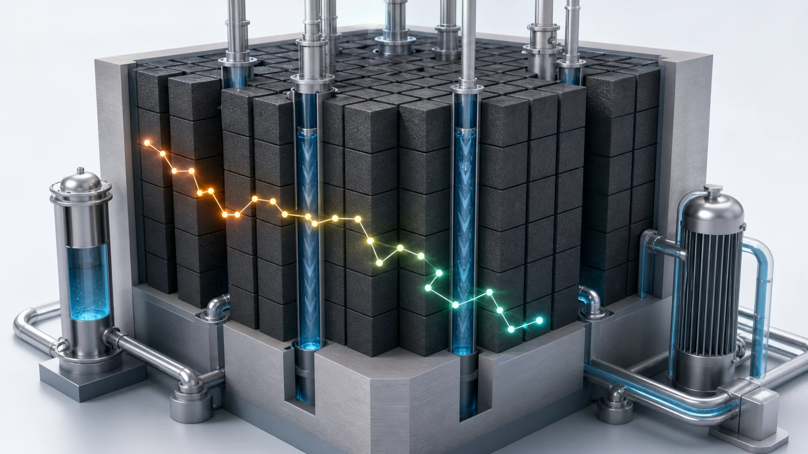
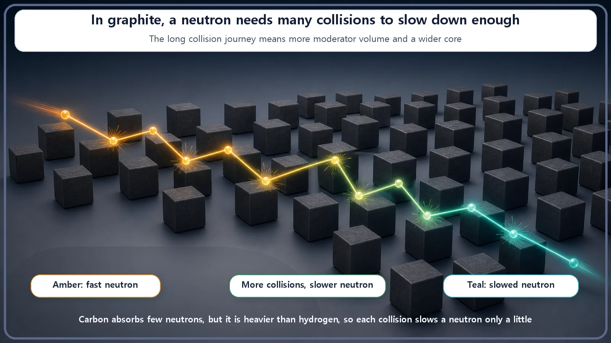
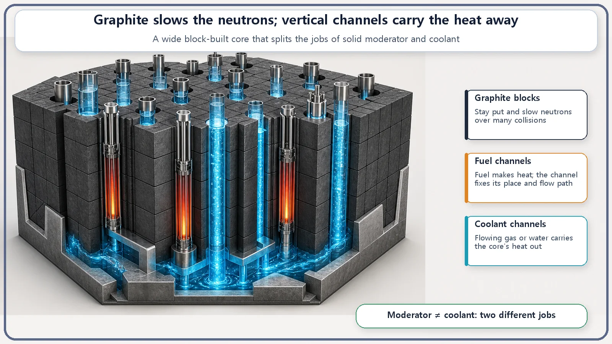

Reactor Types & Plant Systems · 179
Your Pencil's Cousin in the Heart of a Reactor — How Graphite-Moderated Reactors Split Moderation from Cooling
Graphite slows neutrons while a separate gas or water carries the heat, and that division of labor shapes everything from core size to safety characteristics.

A graphite-moderated reactor uses solid graphite to slow neutrons and a separate gas or water coolant to carry the heat. Graphite wastes almost no neutrons but slows them gently, so the core is large, and the choice of coolant divides these reactors into very different families.
Open a desk drawer and pull out a pencil. The dark core that leaves its scratchy trail on paper is graphite, which is essentially pure carbon. In some reactors, that same material fills the middle of the core. Today's subject is the graphite-moderated reactor.
Graphite's job in a reactor
When fission happens, neutrons fly out at very high speed. Those fast neutrons are poor at triggering the next fission. For the fuel to catch them and keep the chain going, they need to be slowed down. A material that puts the brakes on neutrons is called a moderator, and a graphite-moderated reactor gives that job to graphite.
Graphite earned the role for clear reasons. First, it absorbs almost no neutrons. It slows them without wasting them, which leaves room to sustain a chain reaction without highly enriched fuel, even with uranium as it occurs in nature. Second, graphite is a solid. It can be stacked like bricks to form the skeleton of the core, with channels bored between the blocks for fuel and coolant. Third, it holds up at very high temperatures without melting, which makes it a natural material for reactors that run hot.
No free lunch: why the core gets big
Graphite has one fundamental weakness: it moderates slowly.
How much a collision slows a neutron depends on the mass of what it hits. Think of billiards. A ball that hits another ball of similar mass loses a lot of speed, but a ball that hits something much heavier, like a bowling ball, just bounces off with most of its speed. The lightest partner a neutron can meet is hydrogen, and the hydrogen in water slows neutrons down in just a few collisions. Carbon is about twelve times heavier than hydrogen, so one collision takes off only a little speed. In graphite a neutron has to bounce many more times to slow down enough. Roughly speaking, what takes around twenty collisions in water takes more than a hundred in graphite. (These collision counts differ slightly between textbooks and with purity and conditions, so they are given as approximate figures.)

Many bounces mean a lot of graphite, because neutrons need room to slow down. So for the same electrical output, a graphite-moderated core is much larger than a water-cooled reactor's. The interesting twist is that because graphite wastes almost no neutrons, it is a material that is "clumsy per collision, but so thrifty that its overall score is actually high." A slow but frugal worker.
The real signature: moderation and cooling split apart
In the familiar water-based reactors, one substance does two jobs at once: water slows the neutrons as the moderator and carries the core's heat as the coolant. It's like a small diner where the owner both cooks and serves.
A graphite-moderated reactor separates those jobs. Solid graphite handles moderation, and a completely different substance handles cooling. Think of a kitchen with separate cooks and servers. The graphite blocks stay put in the core and do nothing but slow neutrons, while coolant flows through channels between them and carries only heat. This split between moderation and cooling is the identity of the graphite reactor.
So what does the cooling? The answer divides graphite-moderated reactors into several families.

Meet the graphite family
First, there are gas-cooled reactors, which push a gas such as carbon dioxide or helium through channels in the graphite core to draw out heat. The early gas-cooled reactors that Britain ran for many years, and their advanced successors, belong here. Because gas can get very hot, these reactors can run at high temperatures for better efficiency. Their newest form, the high-temperature gas-cooled reactor, heats helium to very high temperatures, and research continues on using it not only for electricity but also for producing hydrogen and supplying industrial heat.
The other branch is cooled by water: water flows through tubes set among the graphite blocks and boils as it cools them. The design built in large numbers in the former Soviet Union is of this type.
A bit of history: in 1942, the world's first reactor, built from stacked graphite blocks with uranium placed between them, produced the first self-sustaining chain reaction. Graphite was there at the very start.
Two sides of the split: strengths and cautions
The division of labor brings clear strengths: wide latitude to use fuel without heavy enrichment, hot operation in gas-cooled designs for efficiency or industrial heat, a large heat-storing core that responds sluggishly rather than with sudden temperature swings, and, where each channel is accessible, refueling without shutting down.
There are also points that need care. The large core means more construction. Graphite also has a peculiar phenomenon called Wigner energy: under long neutron exposure, carbon atoms are knocked slightly out of place in the crystal and store energy, which, if not managed, can later be released as heat. Graphite reactors handle this by periodically heating the graphite to release the energy in a controlled way, or by running hot enough that it never builds up. In the early days of nuclear energy there was an accident related to this phenomenon, and that experience was carried into later design and operation.
One more feature deserves attention in water-cooled graphite reactors. Because graphite does all the moderating, moderation stays the same even when the cooling water boils and its bubbles grow or shrink. Water also absorbs some neutrons, so when water turns to steam and that absorption drops, under certain conditions the reaction can tilt toward becoming more active. International bodies identified this design characteristic, together with other factors such as the control system and operating conditions, as a key to understanding the major accident of 1986. The design was afterwards modified to reduce this characteristic. The important point is that this belongs to the specific combination of "graphite moderator plus water coolant," not to graphite reactors as a whole. In gas-cooled graphite reactors and high-temperature gas reactors, the gas coolant plays almost no part in moderation or absorption, so they don't share this property in the first place.
Two common mix-ups
"Doesn't the graphite do the cooling too?" No. Graphite handles moderation and structure; the heat is carried by a separate substance such as gas or water.
"Aren't all graphite reactors pretty much alike?" Not at all. Even with the same graphite moderator, whether the coolant is carbon dioxide, helium or water changes the operating temperature, the safety characteristics and the fuel. Judging a water-cooled design and a helium-cooled high-temperature reactor by the same yardstick would be a mistake. The coolant divides them more than graphite unites them.
Today's summary
- A graphite-moderated reactor uses graphite (solid carbon, the same material as pencil lead) as the moderator that slows neutrons.
- Graphite wastes almost no neutrons, doubles as structure and tolerates heat, but moderates slowly, so the core gets large.
- Its defining feature is the split between moderation and cooling: graphite moderates, while a separate gas or water carries the heat.
- The coolant defines the family (gas-cooled with carbon dioxide or helium, or water-cooled).
- The split allows low enrichment, hot operation and on-line refueling, but brings a large core, Wigner energy and, in water-cooled designs, void behavior to manage, each handled differently by design.